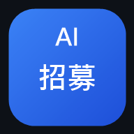

登入只用來同步你的訓練紀錄與偏好設定，換手機或換電腦時進步曲線接得起來。
已經有 AI業務教練的帳號，直接用同一個登入就好，兩邊的紀錄分開存。
API 金鑰不會上雲端，只留在這台裝置。
還沒有 AI API 金鑰？看免費申請教學
已經在用 AI業務教練的話，貼上同一把金鑰就可以（兩個 App 的免費額度是合計的）。
金鑰只儲存在你自己這支手機的瀏覽器，不會存到伺服器，也不會與其他人共用。 所有 AI 用量都算在你自己的帳號上。共用裝置請記得使用完登出。
歡迎使用 AI招募教練，謝謝你願意花時間練習！
在正式和招募對象面談之前，先跟 AI 招募教練充分演練，正式招募時就能更加游刃有餘。
提醒：生成內容僅供自學參考，請勿公開分享。
⚠️ 業務員網路言行不得涉及招攬保險或招募行為 ⚠️
本工具為訓練用途，不提供法律、稅務或財務建議，也不會產生真實的招募對象資料。請勿輸入真實姓名、電話或身分證號。

生成內容僅供自學參考，請勿公開分享。
⚠️ 業務員網路言行不得涉及招攬保險或招募行為 ⚠️
請用代稱，不要輸入真實姓名、電話、身分證號等個人資料。
演練過程中 AI 只會扮演招募對象，不會教學或評分；你講得卡住時，對方會像真人一樣問你「找我什麼事？」。結束後才會給你回饋。
正在分析你剛才的表現…
裝好之後從桌面圖示開啟，沒有網址列、全螢幕，用起來就是一個 App。 長按圖示還有捷徑可以直接跳到痛點分析、電訪演練、面談演練。